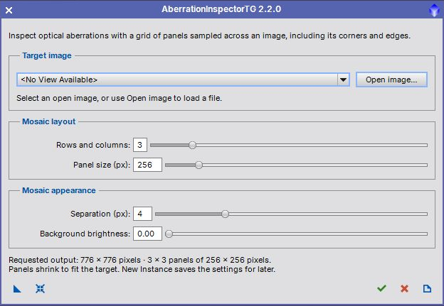

Inspect optical aberrations with a grid of image panels. User guide for version 2.2.0. [more]
Keywords: optical aberrations, mosaic, image inspection, TGScripts, Mike Schuster
[hide]
[hide]
AberrationInspectorTG creates a new square mosaic from evenly spaced subsections of an image. The panels span the source from its first to its last row and column, including the corners and edges. Odd grid sizes also include a panel centered on the image.
Based on AberrationInspector by Mike Schuster, the TGScripts version supports panels up to 2048×2048 pixels and reusable process instances. Version 2.2.0 adds the compact interface used by recent TGScripts, image opening from the dialog, and repeated application without closing it.
PixInsight 1.9.5 or later with the V8 JavaScript runtime is required. See the Parameter Reference for the controls and their ranges.
[hide]
Target image, Mosaic layout, and Mosaic appearance group the controls. The summary below them reports the output dimensions and effective panel size. The action toolbar is at the bottom.

The screenshot shows the dialog opened before an image is loaded. You can configure the mosaic first, then select or open an image, or save an instance for later use.
[hide]
Open the installed script from Script > TG Scripts > AberrationInspectorTG. To use a repository copy, choose Script > Execute Script File and open src/scripts/TGScripts/AberrationInspectorTG.js from the TGScripts repository. An open image is not required at startup.
The dialog remains open. Adjust settings or select another source and apply again. The selected source is retained when the output becomes the active image. Each application creates a uniquely named mosaic; source pixels, previews and image selections are left unchanged. Grayscale and RGB images retain their channel count and sample depth, and the source display stretch is copied to the output.
[hide]
From left to right, the toolbar contains:
New Instance (blue triangle)
Drag to save the four mosaic settings as a process icon. No target is required or stored. Drag the saved instance onto an image or preview to create its mosaic directly. Open it globally to select a target in the dialog. Older instances retain their saved settings; a legacy target identifier is honored if that image is still open. Dropping an instance onto a view always uses the view receiving it.
Reset (blue reset icon)
Restore the default 3×3 grid, 256-pixel panels, 4-pixel separation and black background. The selected target is retained.
Apply (green check mark)
Create a new mosaic from the selected image or preview and keep the dialog open.
Close (red cross)
Close the dialog. Images opened or generated by the script remain available in PixInsight.
Documentation (page icon)
Open this user guide. A repository copy uses the guide shipped alongside that copy.
[hide]
Select an open main view or preview. The active view is selected initially when available. Open image loads an image file and selects its first image. You can launch the script with an empty workspace; applying without a target displays guidance and returns to the dialog.
Number of rows and columns in the square mosaic, from 2 to 9. The default is 3, producing nine panels. A 2×2 mosaic samples the four corners; a 3×3 mosaic also samples the middle of each edge and the center.
Requested width and height of each square panel, from 16 to 2048 pixels. The default is 256. The effective size is automatically reduced, if necessary, to the smaller of the requested size, source width divided by the grid size, and source height divided by the grid size, rounding down to whole pixels. The summary displays the effective size; the requested value remains available for subsequent images.
Gap between neighboring panels, from 0 to 16 pixels. The default is 4. A value of zero joins panels without a gap. There is no outer border.
Brightness of the gaps, from 0 (black) to 1 (white). The default is 0. It has no visible effect when Separation is zero and never changes source pixel values.
[hide]
The square output has a side length equal to the number of rows multiplied by the effective panel size, plus one separation for each gap between rows. For example, the default 3×3 grid with 256-pixel panels and 4-pixel gaps creates a 776×776-pixel mosaic when the source is at least 768×768 pixels.
Smaller sources reduce the panel size automatically. For a 600×450-pixel source with the same settings, the panels become 150×150 pixels and the output is 458×458 pixels. The summary indicates when this reduction occurs. With no target selected, the summary shows the requested output size.
Every effective panel must be at least 16 pixels wide and high. A 3×3 grid therefore needs a source of at least 48×48 pixels. If the source is too small, select a larger image or reduce Rows and columns. Invalid targets and files that cannot be opened produce a message and leave the dialog available.
[hide]
Original AberrationInspector script by Mike Schuster, copyright 2012-2015. TGScripts modifications by Thorsten Glebe. The source file retains the original license and copyright notices.
This product is based on software from the PixInsight project, developed by Pleiades Astrophoto and its contributors (http://pixinsight.com/).
Copyright © 2022-2026 Dr. Thorsten Glebe. Original script copyright 2012-2015 Mike Schuster.